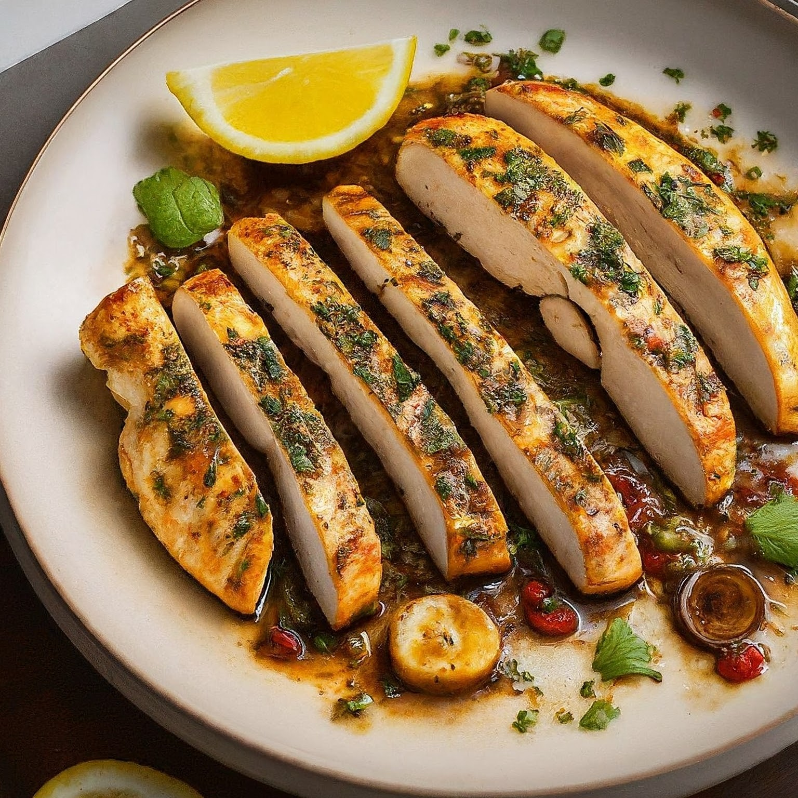

Chicken Breast Saute
Ingredients:
2 boneless, skinless chicken breasts (around 6-8 ounces each)
1 tablespoon olive oil
Salt and freshly ground black pepper to taste
1/2 teaspoon dried thyme (or other preferred herbs like oregano, Italian seasoning)
1/4 cup chicken broth (or white wine)
1 tablespoon lemon juice (optional, for a brighter flavor)
Optional additions (choose one or a combination):
1/2 cup sliced mushrooms
1/4 cup chopped onion
1 clove garlic, minced
1/4 cup chopped fresh herbs (parsley, basil, chives)
1 tablespoon butter (for a richer sauce)
Instructions:
Prep the Chicken: Pat the chicken breasts dry with paper towels. Season them generously with salt, pepper, and dried thyme (or your chosen herbs).
Heat the Oil: In a large skillet over medium heat, heat the olive oil.
Sear the Chicken: Carefully place the chicken breasts in the hot oil. Sear them for 3-4 minutes per side, or until golden brown and cooked through.
You can check for doneness by inserting an instant-read thermometer; the internal temperature should reach 165°F (74°C).
Optional Additions (Sauté): While the chicken rests, add any of your chosen optional ingredients (mushrooms, onion, garlic) to the pan and saute until softened.
Deglaze the Pan: Once the chicken is cooked and removed from the pan, add the chicken broth or white wine to the pan. Scrape up any browned bits from the bottom of the pan
(deglazing) to incorporate them into the sauce. Bring the liquid to a simmer and cook for a minute or two, allowing it to reduce slightly.
Finish the Sauce (Optional): If desired, add a tablespoon of lemon juice for a brighter flavor. You can also add a tablespoon of butter for a richer Sauce
(swirl it in until melted and incorporated).
Serve: Plate the chicken breasts and spoon the pan sauce over them. Garnish with chopped fresh herbs (if using) and enjoy with your favorite sides like roasted vegetables,
rice, or mashed potatoes.
Tips:
Even Thickness: For even cooking, ensure the chicken breasts are of similar thickness. If one is thicker, you can pound it slightly thinner between two sheets of plastic wrap.
Non-Stick Pan: Using a non-stick pan can help prevent the chicken from sticking.
Adjust Herbs and Spices: Feel free to adjust the herbs and spices to your preference. You can experiment with different combinations like rosemary, paprika, or a store-bought Italian seasoning blend.
Cooking Time: The cooking time may vary depending on the thickness of the chicken breasts. Use an instant-read thermometer to ensure they reach the safe internal temperature of 165°F (74°C).
Leftovers: Store leftover chicken breast saute in an airtight container in the refrigerator for up to 3 days. Reheat gently in a pan over medium heat or in the microwave until warmed through.
Enjoy your delicious homemade chicken breast saute!